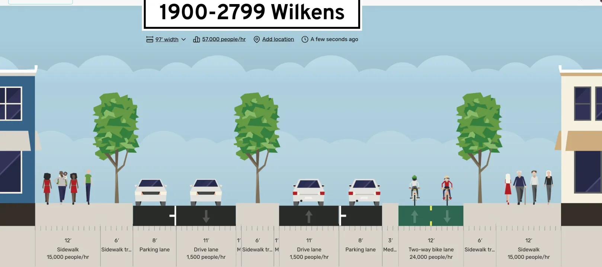

About Us
A community-rooted effort to build a safer, more vibrant corridor for everyone who calls this area home.
The Wilkens Ave Renaissance Coalition was formed by neighbors, commuters, and local stakeholders who recognized that Wilkens Avenue — a major corridor in Southwest Baltimore — has long-standing safety challenges and untapped potential. We came together to advocate for the changes we want to see, and to ensure community voices are central to any plans for the corridor's future.
Our coalition brings together residents from the neighborhoods along and surrounding Wilkens Avenue, small business owners, daily transit riders, cyclists, and anyone who cares about the health and future of this community.
The safety of people who walk, bike, and use transit along Wilkens Avenue is our number one priority. The corridor has significant gaps in infrastructure that put vulnerable road users at risk every day. We are working toward:

We believe that a safer Wilkens Ave can anchor broader community revitalization. As we improve conditions for people who travel the corridor on foot, bike, and bus, we also want to see the neighborhood grow in ways that benefit current residents.